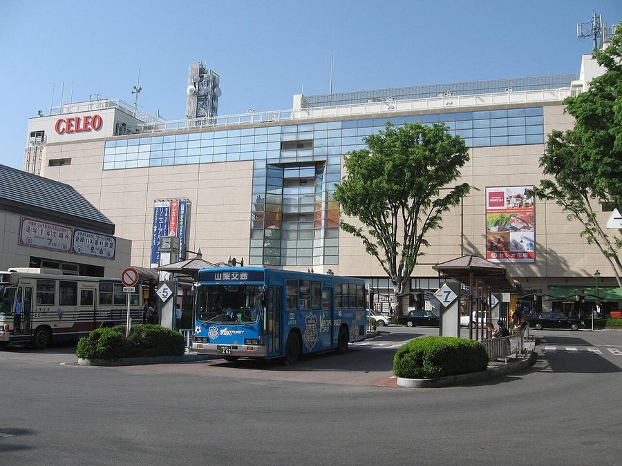
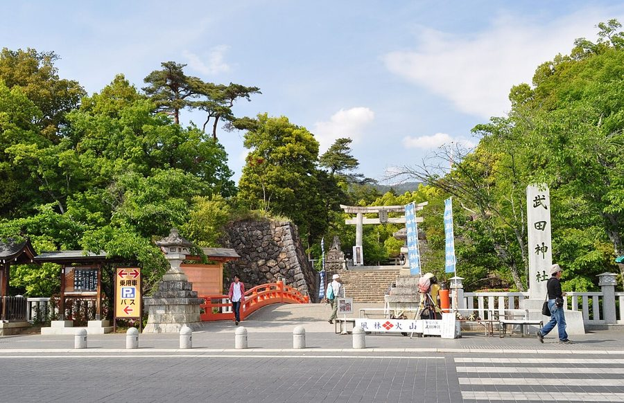
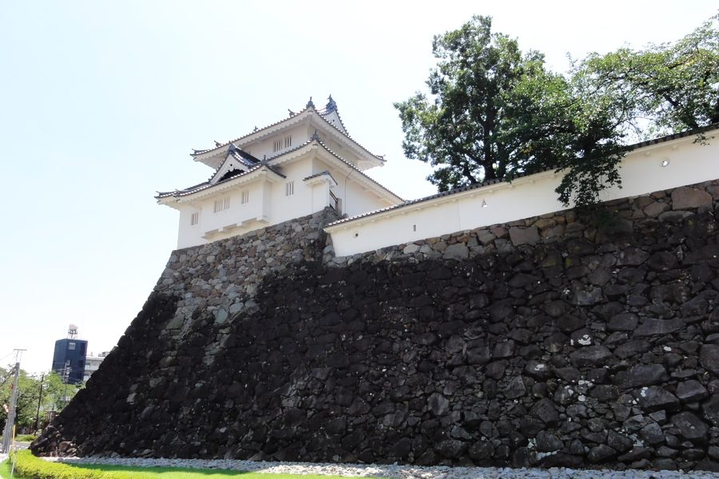

山梨県甲府市の日帰り温泉・銭湯・サウナ（28件）
寄り道スポット検索アプリ「ヨッテコ」の収録データから、山梨県甲府市の日帰り温泉・銭湯・サウナを営業時間・料金つきで一覧にしました（2026年8月時点）。
最も安いのは天然温泉 ヘルシーSPA サンロード（150円）。最も遅くまで入れるのは甲州湯村温泉 湯村常磐ホテル（24:00まで）。朝風呂ならホテル1-2-3 甲府・信玄温泉（6:00開店）。
山梨県甲府市はどんなまち？
数字で見る🔍山梨県甲府市
まちの横顔



- 地形と気候: 市域は甲府盆地の中央部を南北に縦断し、周囲を奥秩父山塊、御坂山地、南アルプスなどの山々に360度囲まれています。市街中心部の標高は約250mから300mですが、市域全体の標高差は大きく、最高部は長野県との境にある金峰山（標高2,599m）で、標高差は2,350mに達します。気候はケッペンの気候区分で温暖湿潤気候（Cfa）に属します。
- 観光: 市域北側の大半は秩父多摩甲斐国立公園に属し、奇岩と渓谷美で知られる御岳昇仙峡（国の特別名勝）は山梨県を代表する観光地です。中央本線の新宿駅－甲府駅間は特急「あずさ・かいじ」で最速90分ほどの近さで、東京への志向性が強いまちでもあります。
- 県都としての甲府: 山梨県の県庁所在地で、県内で人口が最多の市です。中核市、保健所政令市、中枢中核都市に指定されています。都道府県庁所在地としては鳥取市に次いで2番目に人口が少ないものの、面積も狭いため、人口密度は政令指定都市である岡山市に近い水準です。
寄り道充実度（全国偏差値）
偏差値・順位は、ヨッテコ収録データ（2026年8月時点・26,033件）を市区町村別に集計した施設数の全国分布（1,728市区町村）から毎回算出しています。カードを押すとカテゴリ別の分析に切り替わります。
日帰り温泉から見た山梨県甲府市
市内の日帰り温泉は28件、全国75位タイ（上位4.3%）。——数のうえでは、はっきり湯の多いまち。
- 露天風呂の有無で見ると57%。全国の46%を1.2倍上回ります。奥秩父山塊・御坂山地・南アルプスなどの山々に360度囲まれた甲府盆地の市。57%という数字が、外で湯に浸かるまちであることを示しています。
- 源泉を使う店の割合は93%で、全国の67%を上回ります。奇岩と渓谷美で知られる御岳昇仙峡（国の特別名勝）を擁する、山梨県を代表する観光地のひとつである市。沸かし湯ではなく源泉が前提で、温泉そのものがまちの資源になっています。
- サウナを備える店は43%。全国水準（52%）より控えめです。サウナで整えるより、湯そのものに浸かりに行くまちです。
- 21時以降も営業する店は50%、全国水準（40%）の1.2倍。一日の終わりに一風呂、という選択肢が残っています。
- 入浴料（判明23件）の中央値は500円。全国（650円）より23%安めです。気軽に立ち寄れる金額に収まっています。
出典: 施設データ=ヨッテコ収録データ（26,033件・2026年8月時点）。偏差値・全国順位・全国水準は全1,728市区町村の分布から毎回算出。 / 人口=総務省「住民基本台帳に基づく人口、人口動態及び世帯数」（2026年1月1日現在） / 面積=国土地理院「全国都道府県市区町村別面積調」（2026年4月1日時点） / 森林率=農林水産省「2025年農林業センサス（農山村地域調査）」市区町村別林野率（2025年、林野率（林野面積÷総土地面積）） / 年平均気温=気象庁「平年値（1991-2020年）」。市区町村の代表点（国土交通省「大字・町丁目レベル位置参照情報」）から最も近い観測点の値 / まちの解説=日本語版Wikipedia「甲府市」（https://ja.wikipedia.org/wiki/甲府市、2026年8月21日取得、CC BY-SA 4.0） / 写真=Wikimedia Commons（各キャプションに作者・ライセンスを記載）
曜日別の営業施設数
| 月 | 火 | 水 | 木 | 金 | 土 | 日 |
|---|---|---|---|---|---|---|
| 22 | 26 | 24 | 27 | 26 | 28 | 28 |
月曜日が最も休みが多く（各6件が定休）、年中無休は17件です。※営業時間データのある28件で集計
入浴料金の分布（大人）
| 500円以下 | 12件 | |
| 501〜800円 | 3件 | |
| 801〜1,200円 | 4件 | |
| 1,201円以上 | 4件 |
料金が確認できた23件で集計。
施設一覧
| 施設 | 営業時間 | 料金（大人） |
|---|---|---|
| つつじヶ崎温泉 天然温泉露天風呂 山の麓にある露天風呂と大浴場を備える温泉。大小宴会や団体のお客様には送迎サービスなども行っている。 | 15:00〜20:00（月休） | 430円 |
| ふじ温泉 天然温泉サウナ 黄味がかった単純温泉を使用した銭湯。やわらかなお湯が特徴。 | 15:00〜21:00（月・水・金休） | 430円 |
| らくだとぺんぎん サウナ 甲府市内にある完全個室の高級プライベートサウナ。複数室タイプあり、オーバーヘッドシャワー、水風呂製氷機完備 | 10:00〜24:00 | 4,500円 |
| アパホテル 〈甲府南〉 天然温泉 | 11:00〜17:00 | 5,000円 |
| トータス温泉 天然温泉露天風呂 | 10:00〜22:00（水休） | 550円 |
| ホテル1-2-3 甲府・信玄温泉 天然温泉露天風呂サウナ 甲府市で唯一、源泉100%かけ流しの天然温泉。加温・加水なしで本物の温泉。薄っすらと黄金色で弱アルカリ性。 | 06:00〜09:30 ※曜日により異なる | — |
| 上九の湯ふれあいセンター 天然温泉露天風呂サウナ | 10:00〜20:00 | 730円 |
| 信玄の湯 湯村温泉 鷲の湯 天然温泉露天風呂 武田信玄が隠し湯として愛した由緒ある温泉。2025年8月に復活オープンした共同浴場。弘法大師の開湯伝説が伝わる歴史ある名… | 07:00〜10:30 | 1,000円 |
| 南部市民センター 天然温泉露天風呂 南部市民センターに併設する温泉施設。内湯と露天風呂を完備した公営施設。 | 10:00〜16:30（月休） | 470円 |
| 喜久乃湯温泉 天然温泉サウナ | 10:00〜21:30 | 900円 |
| 国母温泉 天然温泉露天風呂サウナ | 10:00〜22:00（水休） | 430円 |
| 天然の湯 山宮温泉 天然温泉サウナ | 10:00〜22:00 | 700円 |
| 天然温泉 ヘルシーSPA サンロード 天然温泉露天風呂サウナ 甲府市の総合スパ施設。モール泉の軽い肌触りが特色で、保湿効果が高く湯冷めしない。源泉かけ流し。 | 11:00〜23:30 | 150円 |
| 山城温泉旅館 天然温泉 | 18:00〜22:00 | — |
| 新遊亀温泉 天然温泉 | 14:00〜22:00 ※曜日により異なる | 430円 |
| 湯志摩の郷 楽水園 天然温泉露天風呂 湯村温泉の源泉を加温した柔らかな湯が特徴。保湿・保温効果に優れ、神経痛や疲労回復に効能がある。併設の生蕎麦処で郷土料理も… | 13:00〜18:00（火休） | 1,000円 |
| 湯村温泉郷 ホテル吉野 天然温泉露天風呂 | 09:00〜20:00 | 500円 |
| 湯村温泉郷 杖温泉 弘法湯 天然温泉 弘法大師による開湯伝説の杖温泉。「美肌の湯」として知られ、源泉温度39度のぬるい湯でじっくり温まれる。1200年の歴史を… | 12:00〜15:00 | 1,000円 |
| 湯王温泉 天然温泉 毎分400リットルの自噴温泉。バイブラ風呂、打たせ湯、寝湯など多種のお風呂。ホテル併設の銭湯。 | 14:00〜22:00 | 430円 |
| 源泉湯 燈屋 天然温泉露天風呂サウナ メンバー施設 | 10:00〜23:00（水休） | 1,390円 |
| 特別な日のおもてなし 甲府記念日ホテル 天然温泉露天風呂 湯村温泉の弘法大師開湯伝説から湯を使用。露天風呂を完備し、武田信玄の隠し湯として知られる名湯を享受できる。 | 13:00〜22:00 | 1,500円 |
| 甲州湯村温泉 柳屋 天然温泉露天風呂サウナ 1200年の歴史を持つ信玄の隠し湯。大小4つの露天風呂とお部屋の露天風呂で湯量豊富な天然温泉を満喫。 | 12:00〜21:00 | — |
| 甲州湯村温泉 湯村常磐ホテル 天然温泉露天風呂 開湯1200年の信玄の湯 湯村温泉。創業者が掘削した豊富な湯量の源泉をかけ流し。離れの露天風呂付き客室が自慢。 | 15:00〜24:00 | — |
| 甲府市リサイクルプラザ サウナ 甲府市のリサイクルプラザ内の公共浴場。プール、トレーニング室も併設 | 10:00〜16:30（月休） | 410円 |
| 甲府市湯村温泉郷 湯村ホテル 天然温泉露天風呂サウナ | 09:00〜18:00 | — |
| 緑が丘温泉 天然温泉 | 11:00〜21:00（月・火休） | 430円 |
| 至福の湯 草津温泉 天然温泉露天風呂 | 06:00〜22:00 | 430円 |
| 都温泉 天然温泉 | 14:00〜20:30（月・金休） | 430円 |